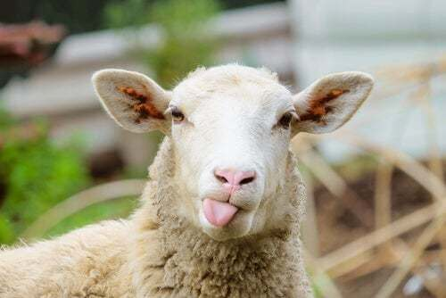

Pecora
Generalità
La pecora è una delle specie di animali più conosciute al mondo.
E' un erbivoro, diffuso in tutto il continente e vive principalmente in greggi.
Solitamente pesa tra i 50 e i 100 kg e raggiunge i 70 o i 120 cm.

Curiosità
- L'età della pecora si nota dalla lunghezza degli incisivi.
- Sono molto sensibili al rumore